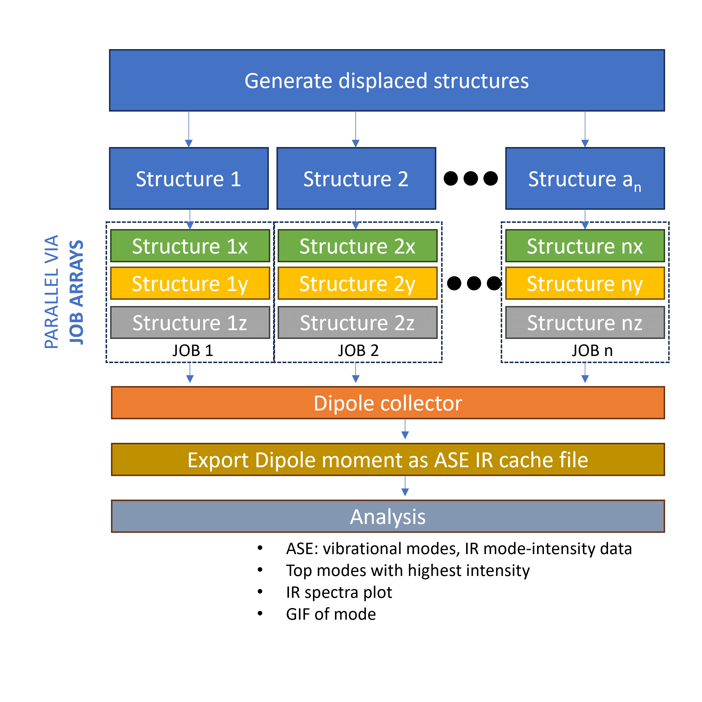
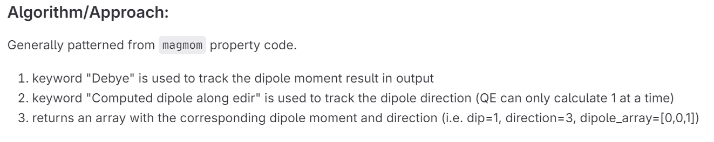

How it works#
First of all, why is this even needed? The current implementation of Infrared analysis in Quantum Espresso is only limited to non-metallic systems, hence, we cannot do analysis on molecules on substrates.
ASE’s VIB/IR sequential calculation#
The most time consuming part of the VIB/IR calculation is the evaluation of the energy, force and dipole moment. The algorithm produces 3N+1 displaced structure for the finite difference method and each of these structures are evaluated sequentially. This is not really a problem is we are only limited to 1 node. However, if we are in a supercomputer environment with access to many nodes, this is significantly limiting since we cannot scale up the evalutation step. In the MatSciToolkit workflow, the VIB/IR workflow is reorganized such that we can distribute the 3N+1 structures to different nodes and evaluate them in parallel. To do this, we simply use the job submission system (e.g. PBS, SLURM) to submit the 3N+1 jobs to the queue via job arrays.
{kind=link}
Dipole moment feature for the ASE-Espresso interface#
Prior to development, the ASE-Espresso interface doesn’t have any capability to parse the dipole moment data. This is feature was added as seen in this merge request. This is why there is a need to install a specific version or commit of ASE’s master branch.
{kind=link}
Post-processing dipole moment data#
QE’s 1-dimensional dipole moment calculation#
The approach of QE in calculating (or allowing) the dipole moment is that it is limited in a single direction because it is aligned to the chosen electric field direction. This means that for 3 dimensional systems, we now have 3(3N+1) amounts of self-consistency calculations. The job parallelized implementation we described earlier becomes much more important.
With 3(3N+1) calculations, the MatSciToolkit will save these data and later on, combine it. Basically, x-, y-, and z- component for a specific displaced structure is combined into a single array which we can directly pass to the ASE module as cache. Truthfully, the most god sent feature is the frequency of saving. From my hellish experience, if you do this sequentially, and one of the calculation towards the end is not converged (data is only saved AFTER all calculations, by default, without coding mumbo jumbo), you might end up contemplating the motivation of your work.
Other analysis#
Aside from the combiner, there are some other useful analysis methods here.
1. Computing EMAXPOS#
QE requires yoou to put an emaxpos setting which is a region where you will put the “almost” non-existant electric field. Ideally, this should be the farthest from the atomic coordinates (considering periodicity). The toolkit provides a script for this, and is automated within the wokflow.
2. Graph and plot GIF#
Sometimes, we just need to see a quick plot and quickly imagine the modes. We can do this via the toolkit as well. You can immediately plot the density of states and infrared spectra. Additionally, you can also produce the GIF of the modes. Making GIF modes are parallellized so it will also be faster.